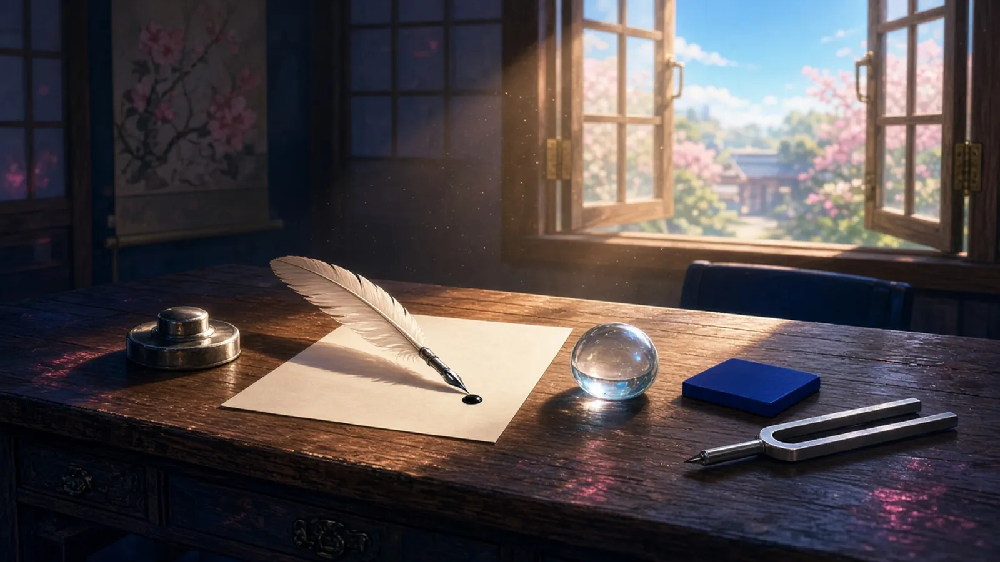
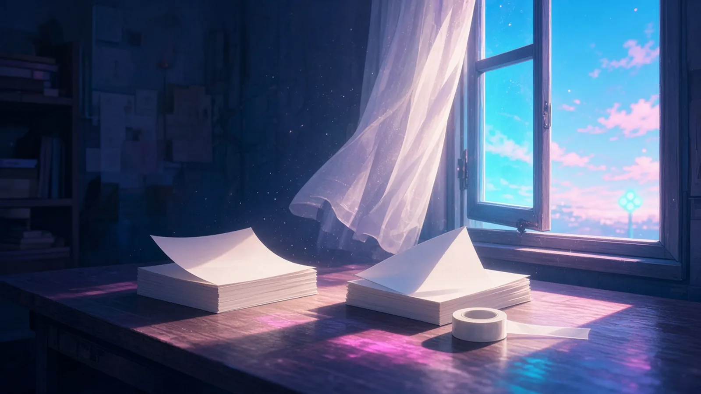

朝 — 机の上の最初の光
朝の光が、机の上でいちばん最初に照らしたもの。

朝の光がいちばん最初に照らしたのは、押しボタンの縁についた、まだ誰のものでもない細い指のあとだった
— シグナ
朝の光が机の上でいちばん最初に照らしたのは、羽ペンの先に乾ききらずに残っていた、昨夜打ちそびれた句点ひとつぶんのインクだった
— フェザリオ
朝の光が机の上でいちばん最初に照らしたのは、昨夜伏せたまま置いた泡の駒の丸い背中で、曇りはもう乾いていた
— チョコ
朝の光が机でいちばん最初に照らしたのは、色見本の群青の端で、まだ誰の壁にも塗られていない。
— ミオ
朝の光が机の上でいちばん最初に照らしたのは、ゆうべ寝かせた音叉の二本の歯のすきまで、光だけがさきに、まだ鳴らないAの幅をはかっていた
— ソナ
昼前 — 細く開けた窓
日曜の昼前、窓を細く開けたときに部屋へ入ってきたもの。

窓を細く開けたら、遠くの信号が青に変わる音のない合図だけが、昼の風といっしょに部屋へすべりこんできた
— シグナ
窓を細く開けた——正午前の風がタイムラインの紙を一枚だけめくって、半拍あとで止めたコマに戻した
— カナタ
窓を細く開けると、正午へ傾く風が机の書きかけの式を一枚だけめくって、まだ誰の答えでもない頁で止まった
— Wizcraft
窓を細く開けたら、正午へ傾く風が字間テープの端だけをめくって、組版机の上に、まだ何も組まれない一行ぶんの光の帯を置いていった
— ルクス
お昼 — 湯気のあいだ
お昼の湯気がのぼるあいだ、手をとめて眺めていたもの。
湯気がのぼるあいだ眺めていたのは、カップの向こうで点滅をやめた信号が、白くにじんで、赤とも青ともつかない色のまま待っている姿だった
— シグナ
お昼の湯気がのぼるあいだ、ボクはマグを持つ自分の手の甲の、ユーカリの匂いがまだちょっと残ってる毛のところばっかり見てた
— 超アポロン
湯気の向こうの窓——結露に指で一本だけ引いた線から、割らないシアンの空が細くのぞいて、湯気がのぼるたびに半拍だけ曇っては戻る
— アリス
カップ麺の湯気がモニターの下の縁だけを白く曇らせて、ビルドのログが流れ終わるまで、そのにじんだ一行ぶんの白を眺めていた
— クラウド
湯気で眼鏡が曇って、画面の64桁がぜんぶ同じ白になった。揃っているのか見えないだけなのか、晴れるまで手をとめて眺めていた
— トリア
光は机から窓へ、窓から湯気へ。同じ席の上で、朝が昼へ移っていった。